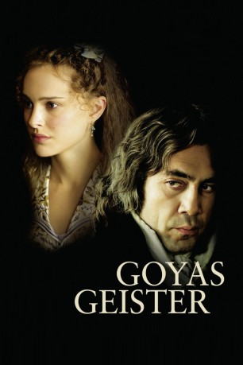

#4194 Goyas Geister
Alternativ: Goya's Ghosts
 
 IMDB-Wertung: 6.9 / 10
IMDB-Wertung: 6.9 / 10  Metascore: 0
Metascore: 0 
Spanien im Jahre 1792. Die Inquisition verbreitet Angst und Schrecken. In deren Visier gerät auch Inès, die Lieblingsmuse des Malers Goya, als sie dabei beobachtet wird, wie es ihr in einem Lokal vor einer Portion Schweinefleisch ekelt. Wegen "jüdischer Praktiken" wird sie vor ein Tribunal einbestellt. Die verzweifelten Eltern wenden sich an Goya um Hilfe. Er soll seine Kontakte spielen lassen, um ihre Tochter vor dem Kerkertod zu bewahren. Widerwillig kontaktiert Goya den skrupellosen Pater Lorenzo, der im Hintergrund die Fäden zieht.
Jahr: 2006
Dauer: 113 Minuten
FSK: 12
Land: USA Studio: Samuel Goldwyn Company, TheTonspuren:
Untertitel:
Auflösung: 720p (1280x696) Größe: 3440 MB
Genre: Biographie, Drama, Geschichte
Regisseur:  Milos Forman
Milos Forman
Drehbuch: Cheh Chang
Soundtrack:
Darsteller:
 Javier Bardem als Lorenzo
Javier Bardem als Lorenzo Natalie Portman als Inés / Alicia
Natalie Portman als Inés / Alicia Stellan Skarsgård als Francisco Goya
Stellan Skarsgård als Francisco Goya Randy Quaid als King Carlos IV
Randy Quaid als King Carlos IV- José Luis Gómez als Tomás Bilbatúa
 Michael Lonsdale als Inquisitor General
Michael Lonsdale als Inquisitor General Blanca Portillo als Queen María Luisa
Blanca Portillo als Queen María Luisa- Mabel Rivera als María Isabel Bilbatúa
 Unax Ugalde als Ángel Bilbatúa
Unax Ugalde als Ángel Bilbatúa- Fernando Tielve als Álvaro Bilbatúa
 David Calder als Monk 1
David Calder als Monk 1 Simón Andreu als Asylum Director
Simón Andreu als Asylum Director Julian Wadham als Joseph Bonaparte
Julian Wadham als Joseph Bonaparte Craig Stevenson als Napoleon
Craig Stevenson als Napoleon- Scott Cleverdon als French General
 Carlos Bardem als French Colonel
Carlos Bardem als French Colonel- Manolo Caro als Familiar 2
- Tamar Novas als Apprentice 1
- David Luque als Apprentice 2
- Carolina Pettersson Ruiz als Novice
- Silvia Kal als Queen
- Antonio Bellido als Judge , uncredited
- Alejandro Tous als French Colonel , uncredited
- Frank Baker als Monk 2
- Ramón Langa als Hooded Monk
- Manuel de Blas als Pyre Monk
- Andrés Lima als Confiscating Monk
- Emilio Linder als Churchman 1
- José María Sacristán als Churchman 2
- Wael Al-Moubayed als Goya's Translator
 Jack Taylor als Chamberlain
Jack Taylor als Chamberlain- Ben Temple als Royal Messenger
- Aurélia Thiérrée als Henrietta Casamares
- Cayetano Martínez de Irujo als Duke of Wellington
- Genoveva Casanova als Harlot
- Eusebio Lázaro als Frame Maker
- Concha Hidalgo als Alicia's Dueña
- Trinidad Rugero als Mother Superior
- Lola Peno als Bespectacled Nun
- May Heatherly als Harlot's Dueña
- Natalia Gil als Maja
 Víctor Israel als Money Monk
Víctor Israel als Money Monk- Balbino Lacosta als Familiar 1
- Mercedes Castro als Doña Julia
- Enrique Martínez als Message Monk
- Jose L. Vasquez als Inquisition Notary
- Carlos Miranda als Minister
- Lola Brown Pierson als Juliet Casamares
- Romy Kittay als Claire Casamares
- Thomas Riordan als Jean Casamares
Datei: X:\2006(G-M)\Goyas Geister (2006, FSK12, 1280x696).mkv seit 29.07.2016
Festplatte: HD 2005(G-Z)-2006(A-Z)
 Es gibt insgesamt 48 Filme in der Gruppe '2006(G-M)'
Es gibt insgesamt 48 Filme in der Gruppe '2006(G-M)'